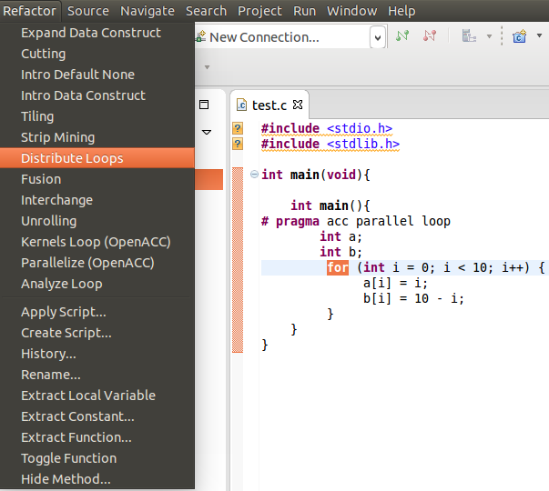
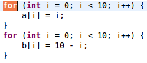

Description:
Separates a single loop into multiple loops by putting each statement into a new separate loop's body.
Example:
- Select the desired for loop to be changed and choose DistributeLoops under the Refactoring menu.

- The resulting Loop.

Use:
Distribution can be used to break down loops to achieve a better utilization of locality reference.
Restrictions:
- Loop body must contain at least two statements.
- Loop-carried anti-dependence in the less-than direction can cause refactored code to produce different results.
- As of now, loop cannot have any pragma statements attached to it.